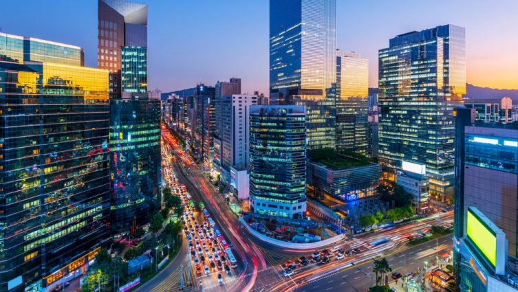
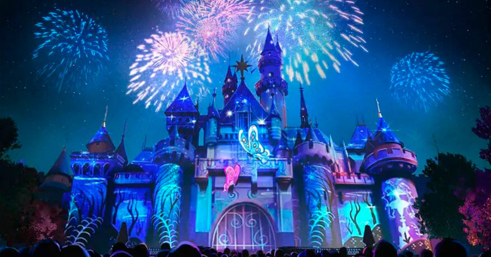
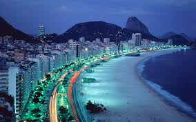

CINCO LUGURES QUE AINDA QUERO CONHECER
coreia do sul

Seul, a capital da Coréia do Sul, é uma cidade moderna e muito encantadora de se visitar.
Ao andar pela grande cidade você irá notar uma mistura de modernidade e futurismo com
simplicidade e tradicionalismo, como por exemplo, um prédio super futurísticos ao lado de
palácios com milhares de anos.
Disney/ Orlando, na Flórida, Estados Unidos

A Disney, oficialmente conhecida como The Walt Disney Company, é um conglomerado global
de entretenimento conhecido por sua influência na indústria de mídia e entretenimento.
Fundada em 16 de outubro de 1923, por Walt Disney e Roy O. Disney, a empresa começou como
um pequeno estúdio de animação e desde então se tornou uma das maiores e mais diversas empresas
de entretenimento do mundo..
Rio de janeiro, Praia de Copacabana

Suas águas esverdeadas e geladas são um refúgio diante do calor que faz na cidade no verão.
Sempre bastante movimentada, a praia carioca reflete um pouco do que é o Rio de Janeiro,
um local alto astral, com uma beleza natural ímpar!
Foz do Iguaçu, as cataratas

As Cataratas do Iguaçu são tão impressionantes que, em 1986,
a UNESCO decidiu que mereciam ser reconhecidas como Patrimônio Natural da Humanidade.
E isso não foi tudo! Em 2011, as Cataratas do Iguaçu conquistaram outro título incrível:
foram nomeadas uma das 7 Maravilhas Naturais do Mundo.
O Pão de Açúcar, Rio de Janeiro

O Pão de Açúcar é uma icônica formação rochosa localizada no Rio de Janeiro,
Brasil. Com aproximadamente 396 metros de altura, ele se ergue na entrada da Baía de G
uanabara, no bairro da Urca. Este monólito de granito oferece vistas panorâmicas espet
aculares da cidade, incluindo pontos turísticos como o Cristo Redentor, as praias de Co
pacabana e Ipanema, e a própria baía.